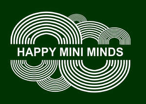

Trade Mark Journal No.2025/043 24 October 2025
UK00004279470 16 October 2025 (9,16,41)

- Class 9
- Downloadable educational course materials; Downloadable educational media; Digital books downloadable from the Internet; Recorded media; Downloadable videos; Pre-recorded videos; Video recordings; Downloadable video recordings; Downloadable video game programs; Interactive video software; Interactive video game programs; Electronic publications; Electronic publications, downloadable; Downloadable electronic publications; Downloadable electronic books; Downloadable publications; Downloadable electronic brochures.
- Class 16
- Printed educational materials; Printed teaching materials; Printed training materials; Printed teaching material; Educational and instructional material; Printed packaging materials of paper; Printed promotional material; Printed curricula; Printed correspondence course materials; Instructional materials; Paper teaching materials; Teaching materials; Printed informational flyers; Instructional and teaching materials; Printed informational sheets; Educational publications; Printed matter for instructional purposes; Packaging materials; Packaging materials made of recycled paper; Printed informational cards; Paper crafts materials; Printed publications; Publications (Printed -); Educational books; Printed brochures; Printed lectures; Printed pamphlets; Binding materials for books and papers; Printed booklets; Printed books; Covering materials for books; Stationery and educational supplies; Printed teaching activity guides; Instructional and teaching material; Writing materials; Drawing materials; Printed programmes; Packaging materials made of cardboard; Printed manuals; Printed lessons; Printed information sheets; Manuals; Handbooks [manuals]; Manuals [handbooks]; Training manuals; Handbooks; Booklets; Guide books; Instruction sheets; Information booklets; Printed guides; Workbooks containing exercises; Brochures; Colouring books; Activity books; Coloring pictures; Teaching manuals; Drawing templates.
- Class 41
- Teaching at elementary schools; Academic mentoring of school age children; Conducting distance learning instruction at the primary level; Conducting distance learning instruction at the secondary level; Arranging and conducting of day school courses for adults; Production of course material distributed at professional courses; School services for the teaching of art; Arranging and conducting of classes; School services; Yoga instruction; Secondary school educational services; Conducting of instructional, educational and training courses for young people and adults; Teaching academy services; Conducting of educational courses; Workshops for training purposes; Teacher training services; Self-awareness courses [instruction]; Conducting workshops [training]; Written training courses; Providing online courses of instruction; Provision of training courses; Distance learning courses; Provision of childrens' educational services through play groups; Arranging of workshops and seminars; Provision of courses of instruction relating to personal time management; Training in yoga; Providing courses of training for young people; Education, teaching and training; Providing courses of instruction for young people; Conducting workshops and seminars in self awareness; Vocational training courses (Provision of -); Health and wellness training; Meditation training; Teaching of meditation practices; Education services relating to meditation; Provision of courses of instruction in self awareness; Education in movement awareness; Arranging and conducting of workshops and seminars in self-awareness; Training for parents in parenting skills; Education services relating to yoga; Conducting workshops and seminars in personal awareness; Coaching [training]; Training of teachers; Education and training; Publication of educational materials; Publication of educational teaching materials; Publishing of educational material; Development of educational materials; Production and rental of educational and instructional materials; Publication of educational books; Publication of educational texts; Publication of printed matter and printed publications; Audio-visual display presentation services for educational purposes; Publication of manuals; Publication of training manuals; Developing educational manuals; Publishing of instructional books; Training and instruction; Publication of educational and training guides; On-line publication of electronic books and journals [not downloadable]; Educational services relating to spiritual development; Publishing of electronic books and journals on-line; Conducting courses, seminars and workshops; Training courses; Educational consultancy; Educational consultancy services; Education and training consultancy; Educational services; Educational and training services; Educational services for providing courses of education; Workshops (Arranging and conducting of -) [training]; Arranging and conducting of workshops [training]; Arranging and conducting of training workshops; Workshops for educational purposes; Teaching; Arrangement of training courses in teaching institutes; Teaching services; Life coaching (training); Educational and teaching services.
Monika Habrych